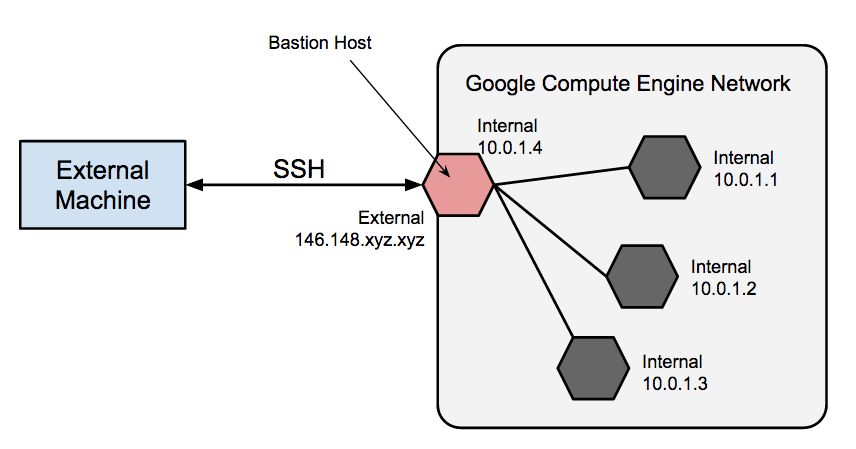
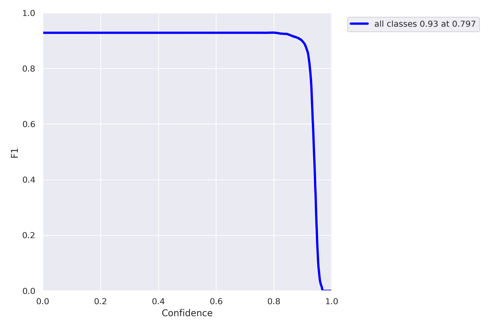

Today was mainly about learning the process of using the GCP virtual machine to train a model locally. While there is another way, using filezilla and running straight from the terminal, I found more documentation on running connecting it to my own terminal. First, we download the Remote-SSH extension, and access it's configuration file. Then, we change the HostName value to the external IP, which only exists after starting up the virtual machine and changes each time we load it, so we will constantly have to update it. We also change our username and add an IdentityFile value that points to the SSH key. I don't think we have to change the SSH key like we have to wiith the external IP address. We add the SSH key to the virtual machine we are use, connect to host, and then we are in an environment which we can run models using the virtual machine. Treat it like any directory. For the future, I will have to explore the filezilla option. Here is the process diagrammed:

Next, I found documentation on training scripts in the ultralytics docs. For setting up the training environment, I will have to install roboflow and ultralytics into the environment I'm using. Before I do this, I'll destroy the other enviornment I made and create a new one because I'm not sure how well python 3.11 works with the yolov8 model, just from intuition from using previous models. Anyway, we download the dataset from roboflow with a script that will be provided. We will need to go into the yaml file to make sure all the paths are right, which it should be. Running this should smoothly train the model.
Finally, I briefly looked into documentation sorrounding evaluation and hyperparameter tuning. The nice part about training through a script is that I will have more freedom to adjust those parameters, namely epochs and learning rate. However, there are many more, like batch size, channel counts, and numbyer layers, which could be explored in specific circumstances. As for evaluating the model, there are a bunch of different things like AP50, F1, etc... which I think can be tested on a trained model. Exploring these after training is done will be great.

There are tons of interesting things in the docs which could be used for next steps. For example, I came across something called hyperparameter tuning, which is run after the model is trained. It takes a range of values for hypeparameters it wants to 'explore', like setting the learning rate between -.0005 to .0005, and it fine tunes with a script. This would be cool especially if the suspicion is that something in the evaluations are indicating that the issue is with the hyperparameters. I also saw a script talking about inferencing and testing the model on pictures from the datasets, or hopefully more realistically, videos. This was just from glancing over the documentation, so I bet if I explore furthur I'll find a bunch of useful info. However, the next steps for now is just to train the model on the parameters the professor mentioned and get back to him with all the updates. from that point on, I can start exploring how I can start adjusting the hyperparameters, dataset, etc... in order to optimize the model. Super interesting stuff honestly and I'm learning a ton. My goal is to not just follow the instructions I'm given but see which ways I can improve and offer suggestions in order to be a useful member.